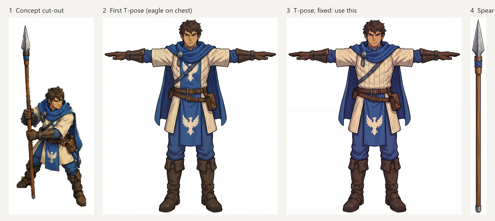
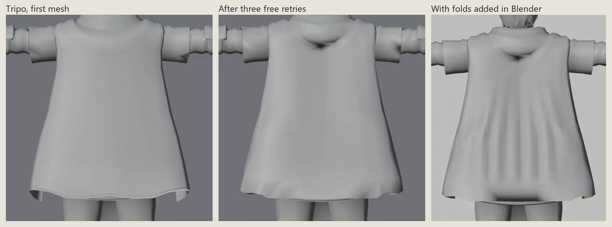
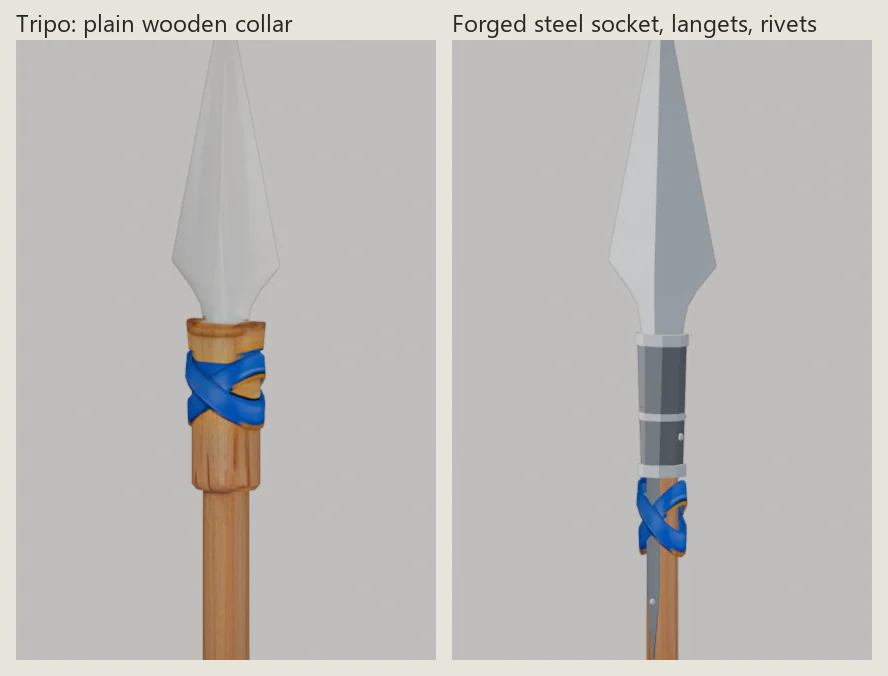
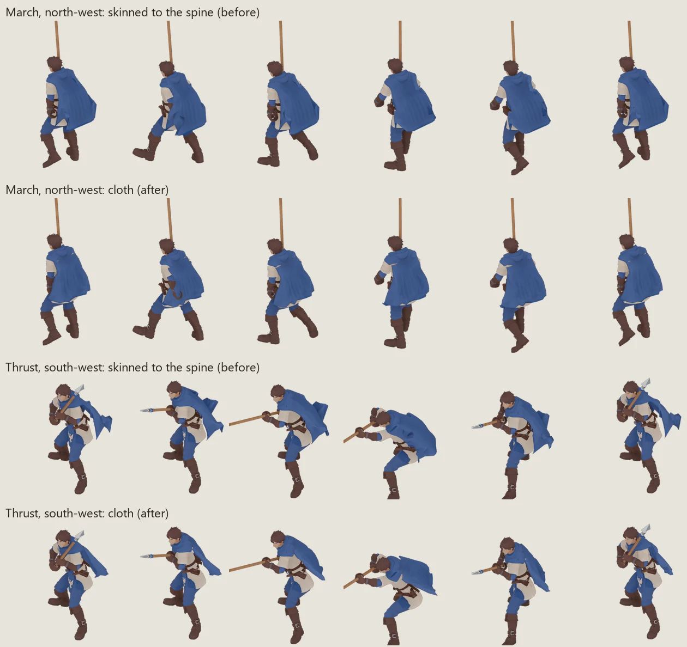
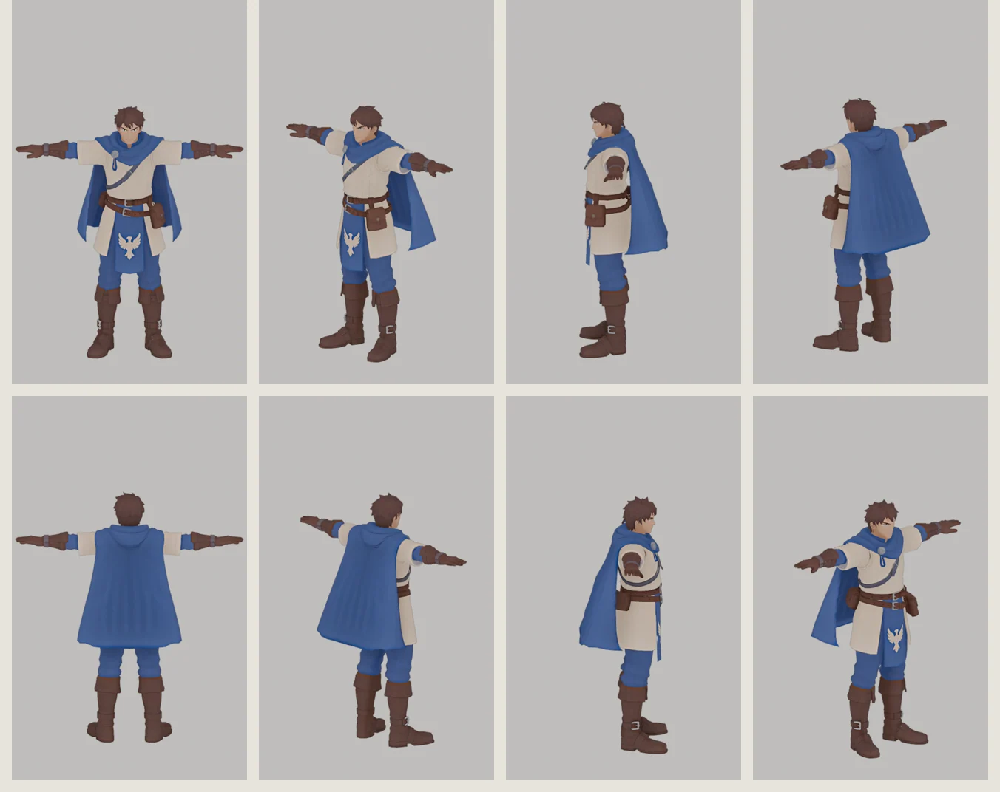
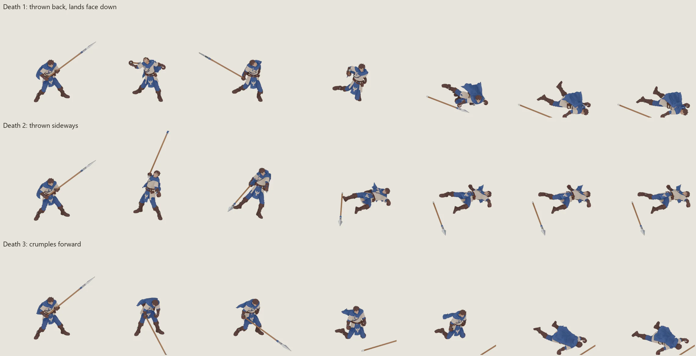
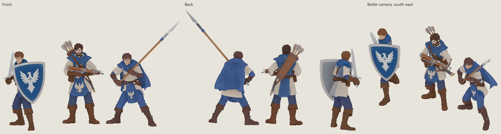

MERIDIUS / AMBERFELD SPEARMEN / 3D RIG / 23 OCT 2026
Spearman 3D rig
The front soldier from the spearmen concept, built in Tripo and rigged in Blender with a Mixamo-compatible skeleton. His spear has a forged steel head made in Blender. Ten clips play below from the game's battle camera, in all four facings: the bayonet strike from E:\Animations as his thrust and guard, the spearmen walk as his march, and three deaths, so the game can vary how men in a squad fall.
Combat skills
Implemented Godot kit · 2026-10-24
Spear attack: 7–11 base melee damage per soldier before armour.
| Skill | Availability | Effect |
|---|---|---|
| Spearwall | Base kit · Key 1 · stance · Every turn | Until your next turn: the first enemy to step into a tile in front of or beside this spearman takes a free attack at +15% hit and +50% damage. A hit stops its advance. |
| Square | Base kit · Key 2 · stance · Every turn | Until your next turn: spears out on every side. Every attack counts as frontal, the spears strike first at anyone who closes in from any side, charges lose their bonus and the square cannot be pushed. +6 defense, but −10 ranged defense: a packed target. |
| Pike Thrust | Promotion · Key 3 · attack · Every turn | Strike an enemy two tiles away in a straight line, over the head of whoever stands between. |
| First Strike | Passive · Automatic | Automatically strikes first when an enemy that moved this turn attacks from the front, once against that attacker per turn. Square extends this protection to every side. |
Promotion skills unlock at Veteran rank through a level-2 Training Yard. Each turn a squad can move once and act once; cooldowns and skill conditions still apply. Base damage is per soldier before rank, equipment and battle modifiers.
3D animation status. Guard and Thrust are available in the pose viewer. Square formation and a dedicated two-tile Pike Thrust are not listed as separate clips.
Pose viewer
Pick a clip and a facing, pause, then step frame by frame to the pose you want to comment on. Screenshot with the readout in view, so the frame is named. Keys: Space play / pause, ← → one frame, Shift + ← → five frames, Home and End first and last frame.
The front soldier cut from Pikemen.png. Nano Banana Pro on Higgsfield turned him into a T-pose, with one edit for the cream chest of the concept, and drew the spear on its own, at 4K.
Smart Mesh in quads. The body's cape was regenerated with the three free Edit Mesh retries and ended at 5,962 faces; the spear has 499. Both are textured at 4096 px.
Cloth folds on the cape's flat back, the hem left as Tripo made it. Four slivers at the tabard slits removed.
The wooden collar is replaced by a forged steel socket with rings, rivets and two riveted langets. The blue wrap now binds the langets. Shaft 4 cm across, length 2.4 m.
A 22-bone skeleton with Mixamo names, fitted to the mesh, with rigid fists round the shaft. Two forearm twist bones carry the wrist half of each forearm round with the hand, so rolling the fist doesn't wring the wrist.
Guard, At ease, March, Thrust, Hit, Death 1–3, Turn 90° and Step into lane, each its own action in the .blend, with the spear's own motion per clip.
The cape is cut free of the body and simulated as wool, pinned under the hood and colliding with his torso, hips, legs and the ground. Every clip has its own baked cache, so all four facings show the same cloth.
Two hands on the shaft in the guard, thrust and turn, the spear dipped a little as he turns. Upright in the right fist on the march and at ease. Leaning back on his shoulder in the step into lane.
From concept to Tripo

Cape and spear head



All round

Three deaths

Next to the footman and crossbowman

They read as one army, in the same blue, cream and brown with the same boots, gloves and belts. The spearman stands out by his long cape and hood, the cream quilted chest and the spear held across his body in guard. In the back view his cape covers the tabard, where the crossbowman shows his quiver and the footman his shield.
Notes
- Holding the spear. In the guard and the thrust it runs from the rear fist through the front one, with the rear fist at the butt cap for reach and the blade's flat level. The bayonet clip's thrust drives straight ahead, while its guard holds the weapon diagonally across the body, tip up and to his left. On the march and at ease, the right arm is re-solved: upper arm hanging, forearm level, hand rolled so the fist's grip axis stands upright, butt riding at 78 cm. In the turn both arms keep the guard's pose on the turning body, the spear dips 16° (eased in and out over 6 frames), and the front arm is re-solved so its fist stays on the shaft. In the hit the spear stays fixed in the right fist.
- Step into lane. The source clip turns his body about 70° to his right as he steps. His head is turned back to look straight ahead in every frame. The shaft rests against the front of his right shoulder and leans 22° back from his chest. His fist is just below, at the collarbone, with the elbow back by his ribs. The wrist bends 11–15° sideways so the shaft keeps its lean, and the fist itself stays rigid.
- Cape. Skinned to the spine, the cape moved like a board. It is now cloth, about 2.6 kg of wool: the top rows under the hood are pinned to the spine, and the rest hangs, swings and settles. It collides with the ground and with ellipsoids riding on his bones: just inside his torso, hips, thighs and shins, plus one round the back of his tunic's skirt and belt. That last one gives the cape its A-line over the hips. Without it, the cape slipped under the skirt when the step into lane turns his body, and the skirt and belt fringe showed through. The leather pouch and fringe on his lower back are pressed flat under the cape for the same reason. The arms have no colliders, because they come down through the cape's sides from the T-pose. Each run starts from the rest pose and eases into the clip's first pose, so the cape has settled by frame 1. Loops are simulated twice and the second pass is kept, with its end eased into its start. The caches are in
art/spearman_3d/cape_cache/, one.pc2per clip. Checked from all four facings on every fourth frame of the march, step into lane, thrust, hit and at ease: in the worst view two or three sampled points of his body show in front of the cape, and nine in one march frame, where his left forearm swings past its edge. - Clearance. Every frame of every clip is checked for the spear crossing his deformed body. Guard, At ease, March, Turn and Step into lane: none. Thrust 1 of 64 frames. Single frames in the deaths as the spear leaves his hand or he lands: Death 1 1 of 72, Death 2 1 of 69, Death 3 2 of 118. Hit: 10 of 61 frames, where his left arm sweeps across the shaft as he flinches. It was 20 with both hands on the shaft.
- On the ground. Retargeted onto him, the three deaths sank his body 12–17 cm into the ground by the time he lay still. That pushed the cape's pinned rows under the floor, and in Death 2 the cloth followed half a metre down. In the deaths his hips are now lifted wherever any part of his body would go below the ground, smoothed over five frames so the lift never pops. His boots may still roll 3 cm into the ground, as in every walk. With the cloth baked again on the lifted bodies, none of it goes below the ground. In Death 2, which ends on his back, the cape lies flat under him. Death 1 and Death 3 end face down, with the cape on his back.
- Blending. Hit, the deaths and the turn come from the crossbowman and footman clips, which start in another stance. They blend in from the guard over 6–8 frames, and the hit blends back out, so the game can cut between them without a jump. The guard loops seamlessly.
- Clips used. Thrust: Attack - Spearmen, frames 1–64. Guard: its hold, frames 57–99. March: Walk - Spearmen, in place. At ease: Idle - Crossbowmen. Hit: Hit - Crossbowmen. Deaths: Death and Death_2 - Crossbowmen, Sword And Shield Death. Turn: Turning - Footman. Step: Standing Walk Right. Standing Block Idle was left out: through both fists it put the spear up behind his shoulder. For spearmen, bracing against a charge is the guard.
- To judge. The guard's spear rises at about 42°, as the bayonet held its rifle. It can be lowered towards a levelled spear wall, with the left hand moved onto the shaft. In Step into lane his neck turns a long way between the turned body and the forward head; if it reads too stiff, the body's turn can be reduced instead.
- Files.
projects/meridius/source/godot/art/spearman_3d/spearman_rig.blend(rig, clips, spear motion and cloth cape), itscape_cache/,spearman_base.blendandspear.blend, rebuilt by the scripts inart/spearman_3d/tools/:rig_spearman.py,retarget_clips.py,spear_motion.py,cape_cloth.py(setup, then sim), withspear_clearance.pyandrender_preview.pyfor the checks and renders. The Tripo exports are inreferences/characters/Spearman TRIPO/, and job IDs and costs inreferences/characters/spearman_idle/jobs.json.